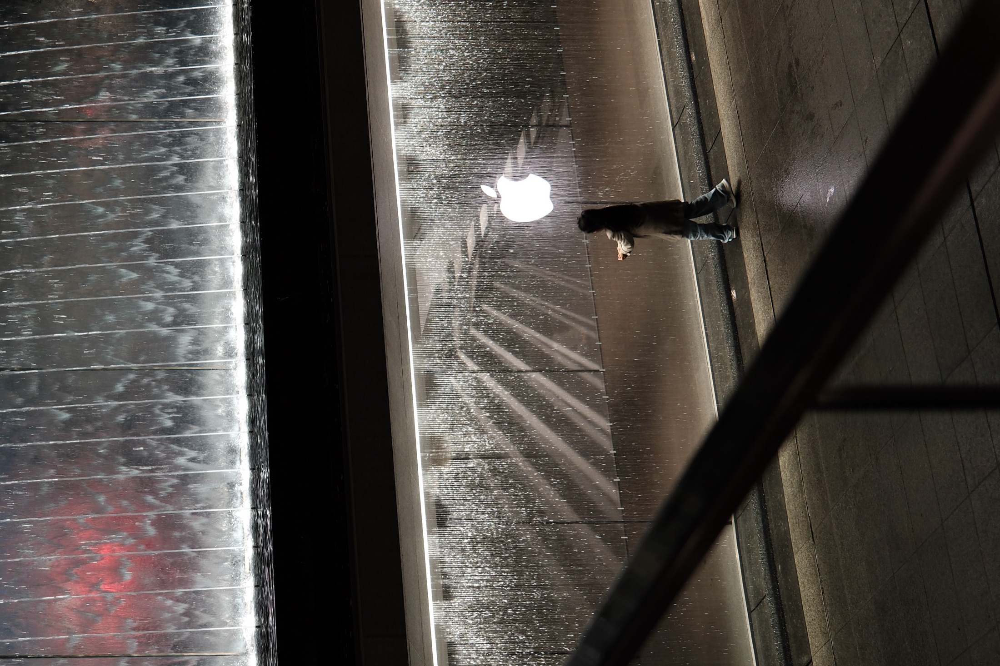
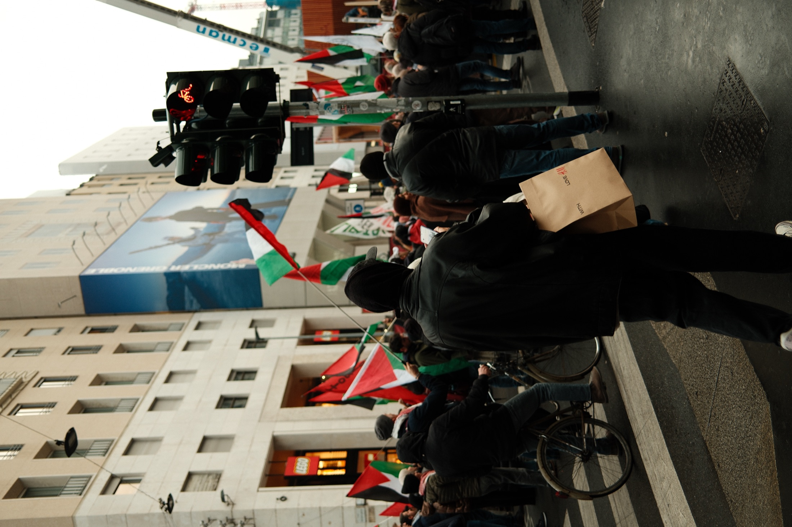
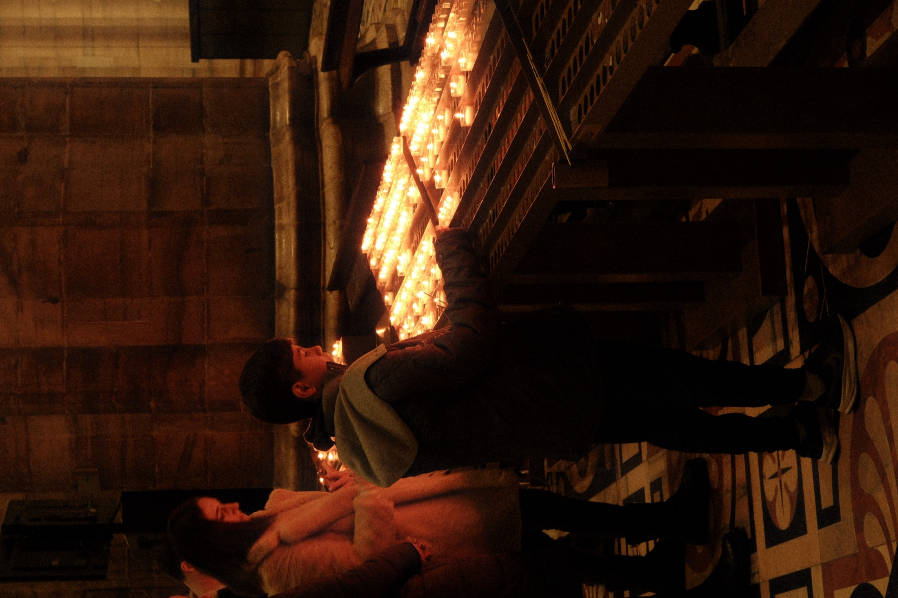
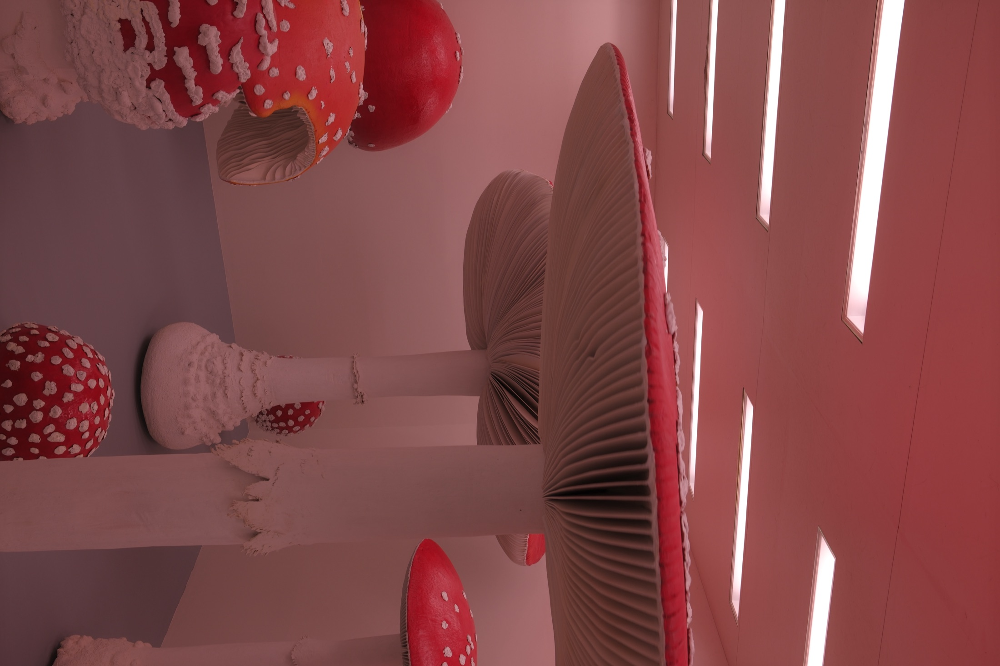
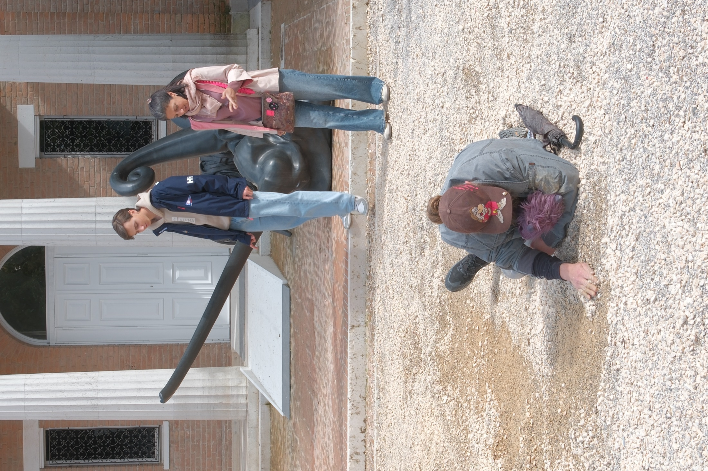

Reading
These images move between display, protest, and small rituals. The event is not only what happens; it is also the architecture, light, signs, and bodies that make the moment visible.
03 / Public scene
Event is the moment when the city stops being background. A person, a crowd, a signal, and a temporary light turn public space into a scene that feels larger than the body inside it.

These images move between display, protest, and small rituals. The event is not only what happens; it is also the architecture, light, signs, and bodies that make the moment visible.
Temporary intensity. A city that briefly gathers itself, then leaves only traces: wet light, flags, candles, and a room after the scene.



